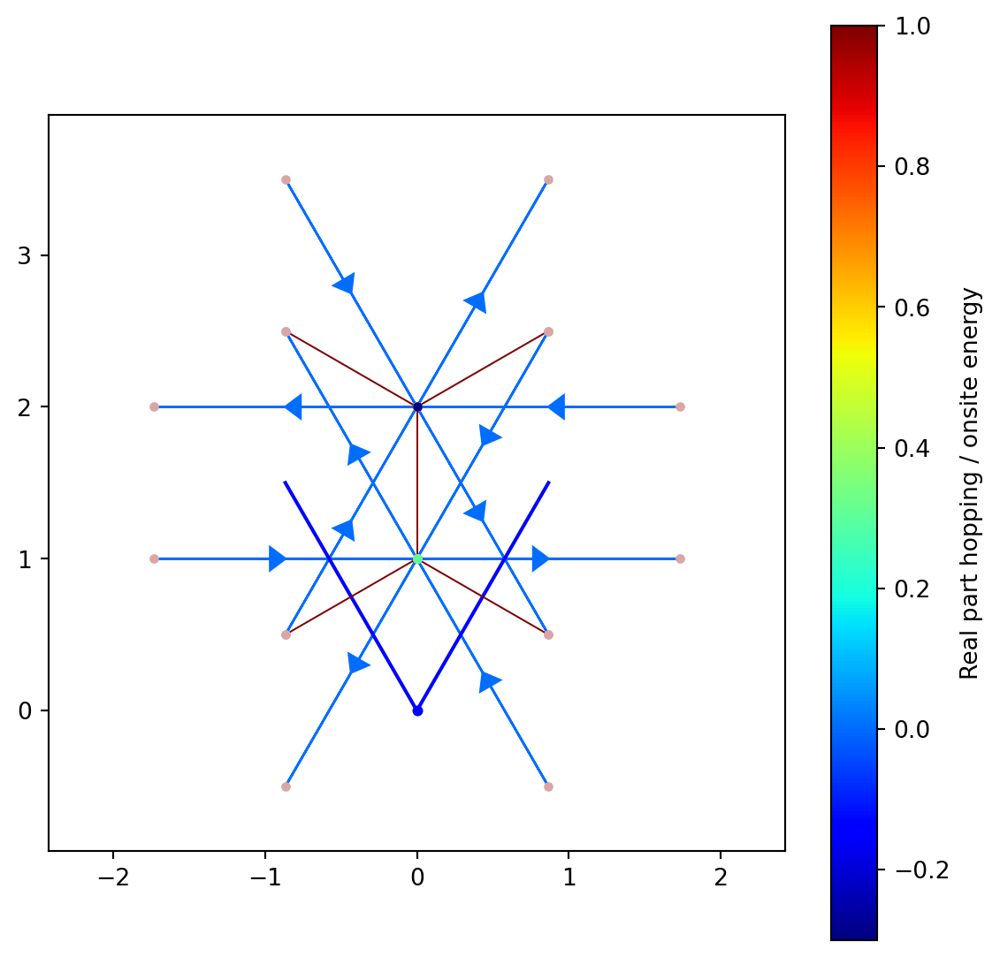

Code
from pythtb import *
from pylab import *
a1=np.array([3/2,-sqrt(3)/2])
a2=np.array([3/2,sqrt(3)/2])
lat=np.array([a1,a2])
orb=[[1/3,1/3],[2/3,2/3]]
def Haldane_model(t2,phi=0,M=0,tx=1,ty=1,tz=1):
K2D=tb_model(2,2,lat,orb)
K2D.set_hop(tx,0,1,[0,0])
K2D.set_hop(ty,1,0,[0,1])
K2D.set_hop(tz,1,0,[1,0])
K2D.set_hop(t2*exp(1j*phi),1,1,[-1,0])
K2D.set_hop(t2*exp(1j*phi),1,1,[0,1])
K2D.set_hop(t2*exp(1j*phi),1,1,[1,-1])
K2D.set_hop(t2*exp(-1j*phi),0,0,[-1,0])
K2D.set_hop(t2*exp(-1j*phi),0,0,[0,1])
K2D.set_hop(t2*exp(-1j*phi),0,0,[1,-1])
K2D.set_onsite([M,-M])
return K2D
Haldane_model(1j,phi=0.5).visualize(1,0,color_hoppings=True)